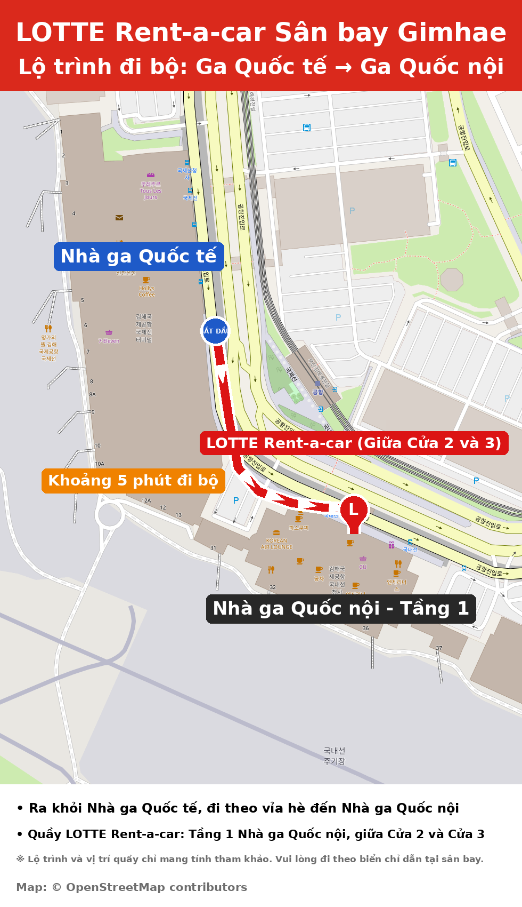

Hướng dẫn nhận xe tại Sân bay Gimhae
Văn phòng Sân bay Gimhae · Thông tin trước khi thuê

1Địa điểm nhận xe
Nhà ga Quốc nội, Tầng 1 (Khu đến)
Quầy nằm giữa Cửa 2 và Cửa 3.
Cách Nhà ga Quốc tế khoảng 5 phút đi bộ.
2Giấy tờ cần mang (chỉ bản gốc)
- Hộ chiếu – để xác minh danh tính
- Giấy phép lái xe quốc tế (IDP) còn hiệu lực – vui lòng kiểm tra hạn sử dụng và hạng xe:
- Hạng B: xe có tối đa 8 ghế hành khách
- Hạng D: xe có hơn 8 ghế hành khách
3Trước khi đến
Vui lòng cho chúng tôi biết số hiệu chuyến bay đến (ví dụ: KE1234) bằng cách trả lời email.
⚡ DỊCH VỤ NHẬN XE NHANH
Gửi trước bản scan Hộ chiếu & Giấy phép lái xe quốc tế để nhận xe nhanh chóng và dễ dàng!
Liên hệ: Văn phòng Sân bay Gimhae
✉️ 534046@lotte.net
💬 Tư vấn qua chatGiờ hỗ trợ: 08:00–21:00 (giờ Hàn Quốc)